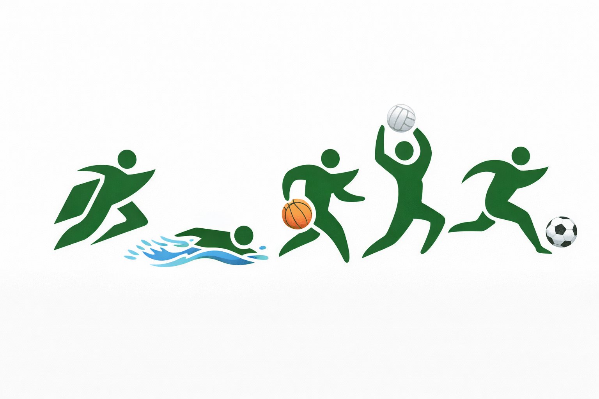

📅 Horário: Segunda a sexta-feira, das 18h às 20h
📍 Local: Rua Luiz Michelon Rodrigues, 250 – Chácara Paraíso, Pompéia/SP
👥 Público: Crianças e adolescentes de 4 a 15 anos
🎯 Objetivo: Desenvolver habilidades técnicas, táticas e sociais por meio do futebol
⚽ Atividades: Treinos semanais, campeonatos locais e oficinas de cidadania
✅ Inscrição: Gratuita – basta comparecer!
📅 Horário: Domingos às 7h15
📍 Local: Fundo do Recinto, Pompéia/SP
👥 Público: Todas as idades (sem restrições)
🎯 Objetivo: Promover hábitos saudáveis e integração comunitária
🏆 Evento anual: Corrida da Inclusão (Novembro)

AEESP - Poliesportiva!
📊 Status: Em elaboração – Lançamento previsto para 2026
👥 Público: Crianças e adolescentes a partir de 8 anos
🎯 Objetivo: Introduzir a prática do vôlei como ferramenta de desenvolvimento físico, técnico e social
👀 Fique atento! Novidades em breve em nossas redes sociais.
📊 Status: Em fase de planejamento – Início previsto para 2026
👥 Público: Interessados de todas as idades
🎯 Objetivo: Promover o bem-estar psicológico e emocional através de palestras, rodas de conversa e atividades esportivas
👥 Facilitadores: Psicólogos, educadores físicos e especialistas convidados
💬 Participe! Deixe seu e-mail para ser notificado sobre o lançamento.